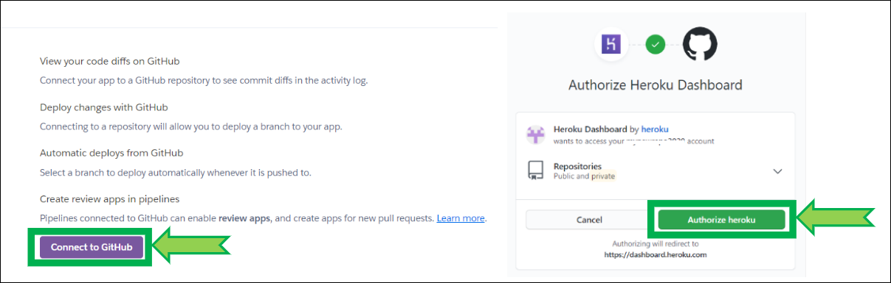

Update Nightscout
Tip
You don’t need to follow these instructions if you use a hosted service.Contact the vendor to learn more about possible updates.
See here which is the current released version before updating.
Step 1: Update your repository in GitHub
Tip
Skip this step if you’re using Azure, Google Cloud xDrip+ scripted deployment or Fly.io from the orignal cgm-remote-monitor repository.
Follow these instructions and come back.
Step 2: Deploy
Log in Heroku https://id.heroku.com/login

Click on
Deploy
Verify Heroku is connected to GitHub, if not, click
Connect to GitHub
If Heroku is not connected to GitHub, scroll down and click
Connect to GitHub, if a popup window opens and requires authorization, clickAuthorize HerokuVerify your app
cgm-remote-monitoris connected to GitHub
If it isn’t, In
Connect to GitHub, typecgm-remote-monitorand clickSearchthen clickConnect
If you have trouble connecting your app, click
Disconnectand reconnect it as shown above
Scroll down to the bottom of the page, select the
masterbranch and clickDeploy Branch
Build will start and information will scroll in the log window. Do not leave the page, do not interfere and wait for completion. It might take more than 10 minutes.Interrupting the process will lead to a broken site and you’ll need to restart deployment.

Wait until the deploy process completes and click
View(if nothing happens clickManage Appthen upper rightOpen App)
Your site will open and should be at the latest version.
Check your profile time zone is correct. You’re done! If you ran into trouble, try the Redeploy method
{kind=link}
{kind=link}
Log into Azure : https://portal.azure.com/
Select your App service, your Nightscout site name (you should see it in recent resources)

If you didn’t find it, it will show in App Services

In the left menu select Deployment Center and change Continuous Deployment to On.
Click Save (or Discard if you don’t want to update). Your site will redeploy with the latest cgm-remote-monitor version.
Expect a few minutes before it comes back online.You can leave Continuous Deployment On if you want upgrades to happen automatically, or turn it back to Off (and save) to control upgrades manually yourself.
{kind=link}
{kind=link}
Site maintainability Perform these operations. Your deployment will update automatically.
Once GitHub updated, your Nightscout should automatically deploy with the latest version.
Continue here